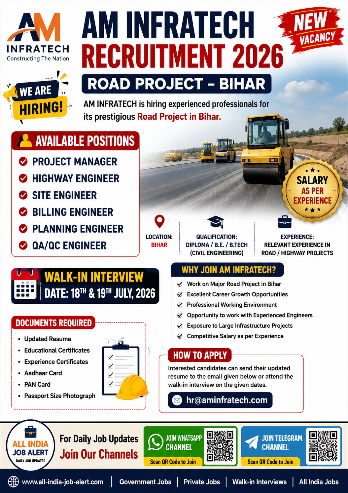

Company: AM Infratech
Project: Road Project
Location: Bihar
Salary: Depends on Experience

AM Infratech has announced a new recruitment drive for its Road Project in Bihar. The company is inviting experienced professionals for multiple engineering positions. Candidates with relevant road and highway project experience are encouraged to apply.
Candidates should possess a Diploma, B.E. or B.Tech in Civil Engineering or an equivalent qualification from a recognized institute. Preference will be given to candidates who have experience in Road, Highway, Bridge or Infrastructure Projects.
The company is looking for experienced professionals. As mentioned in the official recruitment poster, preference will be given to candidates who have worked on Road and Highway Projects. Salary will be offered according to the candidate's experience and interview performance.
The selected candidates will work on the AM Infratech Road Project located in Bihar. Candidates should be willing to relocate if required by the company.
Selected candidates will be responsible for managing, supervising and executing various road construction activities. Depending on the position, employees will handle project planning, site execution, billing, quality control, highway engineering, project monitoring and coordination with contractors and clients.
The Project Manager will lead the overall execution of the road project, while Highway Engineers and Site Engineers will ensure quality construction according to project specifications. Billing Engineers will prepare project bills and documentation, Planning Engineers will monitor project schedules, and QA/QC Engineers will maintain quality standards throughout the project.
Salary will depend on the candidate's qualifications, experience and interview performance. In addition to competitive pay, selected candidates may receive company benefits according to AM Infratech policies, including opportunities for career growth and exposure to major infrastructure projects.
Interested candidates should prepare an updated resume along with educational certificates, experience certificates, Aadhaar Card, PAN Card and passport-size photographs. Candidates should follow the official recruitment instructions and submit their application as per the company's recruitment process.
AM Infratech is hiring for its Road Project in Bihar.
Candidates with relevant Diploma, B.E. or B.Tech qualifications and suitable experience in road or infrastructure projects can apply.
The recruitment is for a Road Project in Bihar.
Project Manager, Highway Engineer, Site Engineer, Billing Engineer, Planning Engineer and QA/QC Engineer.
Get daily Private Jobs, Government Jobs, Civil Jobs, MEP Jobs, Electrical Jobs and Walk-in Interview updates.